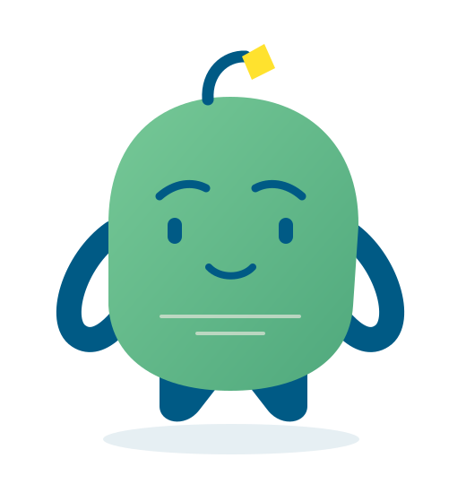
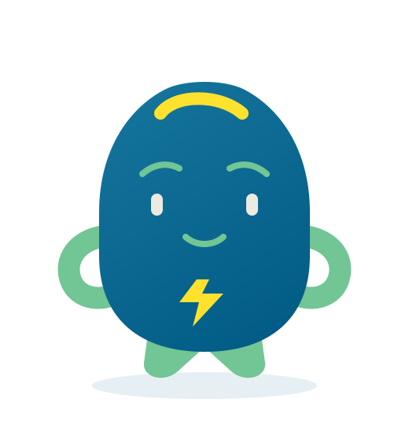
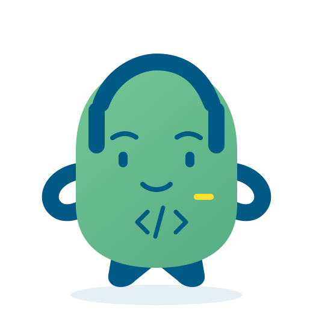
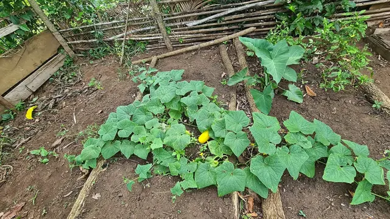

01 / Aprende
Dale bases
a tu idea.
Emprendimiento, gestión y herramientas digitales para dar el siguiente paso con más conocimientos.

El proyecto
EcoHub conecta formación, acompañamiento y comunidad para que jóvenes bolivianos desarrollen sus ideas y emprendan de forma sostenible.

Sostenibilidad
Innovación
Colaboración
Conectividad
Más sobre EcoHub
EcoHub está dirigido principalmente a jóvenes bolivianos de 16 a 28 años. Acerca conocimientos, orientación y redes para desarrollar ideas y abrir nuevas oportunidades.
Cada convocatoria publicará sus requisitos de participación.

La propuesta
Tres formas de impulsar tu idea.
Actividades sujetas a convocatoria.
01 / Aprende
Emprendimiento, gestión y herramientas digitales para dar el siguiente paso con más conocimientos.

02 / Desarrolla
Orientación y acompañamiento para explorar soluciones y fortalecer lo que quieres construir.

03 / Conecta
Personas, experiencias y conexiones que abren nuevas posibilidades para tu proyecto.
Asistencia digital
Conoce a nuestros agentes IA.



Vista previa. El chat aún no está disponible.
Nexo / Orientación
Una guía para entender el proyecto y encontrar información.
Ejemplo de conversación
¿Qué es Bolivia EcoHub?
Un ecosistema de aprendizaje, acompañamiento y comunidad para impulsar ideas sostenibles en Bolivia.
Impulso / Ideas
Preguntas que te ayudan a encontrar un punto de partida.
Ejemplo de conversación
Quiero emprender con materiales reutilizados.
Empieza por una necesidad: ¿para quién sería útil tu producto y cómo lo probarías?
Brújula / Herramientas
Recursos sencillos para organizarte y avanzar con lo que tienes.
Ejemplo de conversación
¿Cómo organizo mi idea?
Crea una lista de tareas, responsables y fechas. Elige herramientas que funcionen también sin conexión.

La Paz — El Alto



Participa
Encuentra un lugar para tu idea y tu potencial.
Publicaremos aquí el enlace y los requisitos cuando estén confirmados. Por ahora, no solicitamos datos personales.
Principalmente, para jóvenes bolivianos de 16 a 28 años. Cada convocatoria confirmará sus requisitos.
Puedes empezar con una idea o con tu interés por aprender. Las condiciones de participación dependerán de cada actividad.
Todavía no hay un enlace oficial de registro. Esta página no recibe postulaciones ni datos personales.
Son una vista previa con ejemplos escritos. El chat no está conectado.